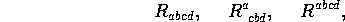

A common operation in tensor analysis and General Relativity is the raising and lowering of indices via metric contractions. The objects so created are not new entities in their own right, just re-expressions of the same fundamental entity. It is common to express these objects with the same name and let the index structure indicate which specific object is being referred to. Thus,

are all representations of the Riemann tensor. In REDTEN every indexed object must have a unique name in the system but the printname's (the name used by the system to display the object) can be the same, indicating the existence of a fundamental relation.
The function shift() is used in concert with the @ operator to ``shift'' indices, i.e. to raise or lower them by metric contractions. This function builds and maintains the data structure that relates the ``parent'' object to each of its ``offspring''. The entire set of offspring and the parent constitutes a ``family'', which is treated as a unit by some REDTEN functions.
The @ operator causes an offspring object to be created in which each index-element operated on by @ has been move to a position opposite its original location (i.e. covariant indices become contravariant and vice-versa). Two related operators are @+ and @- which make ``absolute shifts'': @+ shifts the index-element to a contravariant position (and is a no-op if it already was); @- shifts the index-element to a covariant position.